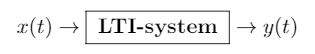
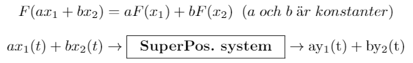
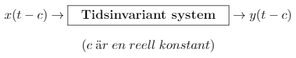
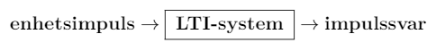
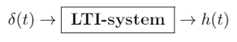

LTI
Om LTI-system, stegsvar, impulssvar, faltning och annat matnyttigt
Vad menas med LTI-system?
Linjära tidsinvarianta system, eller LTI-system, är logiskt nog system som är linjära och tidsinvarianta. Hurra för logik! Men för att den förklaringen ska bli lite mer begriplig kan det ju vara bra att reda ut vad som menas med “Linjär” och “Tidsinvariant”. Med ett linjärt system menar man, lite förenklat uttryckt, ett system där man kan separera signalerna i sina beståndsdelar. Ett tidsinvariant system är ett system vars egenskaper inte ändras med tiden. En mer detaljerad beskrivning av dessa egenskaper kommer senare men inledningsvis kan vi konstatera att ett LTI-system är ett system med fina konsekventa ekvationer som är relativt enkla att räkna på. Så rysligt praktiskt!
LTI-system är något man använder sig av väldigt mycket inom signallära. Även system som egentligen inte är linjära och tidsinvarianta approximeras ofta till LTI-system, eftersom det är så mycket trevligare att räkna på LTI-system. Alla älskar LTI-system! Åtminstone jämfört med andra system som ändrar sig hela tiden och är odrägliga att försöka räkna på, usch och fy!
Egenskaper hos LTI-system
LTI-system har många trevliga egenskaper som gör att deras vänner gillar dem och deras fiender avundas dem. Nu ska vi ta en kik på ett par av de viktigaste egenskaperna.
Linjäritet
För att ett system ska vara linjärt måste det uppfylla superpositionsprincipen, vilket innebär att det är både additivt och homogent för er som tycker om att svänga er med fina ord.
I ett system som är additivt kan man dela upp insignalen i mindre komponenter och kika på dessa komponenters utsignaler och dessa kan sedan kombineras till hela insignalens utsignal. Mycket praktiskt! 
I ett homogent system kan man bryta ut skalningsfaktorer ifrån insignalen och skala om utsignalen med dessa istället. 
Det är dessa två egenskaper som tillsammans utgör superpositionsprincipen. Superpositionsprincipen gör att man kan se insignalerna, och dess komponenter, till ett linjärt system som så grundläggande signaler som möjligt och sen bara skalar och kombinerar utsignalerna de genererar. Kan man visa att ett system uppfyller superpositionsprincipen har man visat att det är linjärt. Hur vet man då om systemet uppfyller superpositionsprincipen? Jo, säg att vi har två signaler \(x_1\) och \(x_2\).
Om systemet uppfyller superpositionsprincipen gäller då att: 
Och därmed är systemet linjärt!
Övning 1: Här följer ett kodskelett till en funktion som undersöker om ett system är Linjärt. Fyll i det som saknas.
isLinearDisc :: DiscTimeFun -- ^ Insignal 1
-> DiscTimeFun -- ^ Insignal 2
-> DiscSystem -- ^ System
-> Double -- ^ Skalningsfaktor 1
-> Double -- ^ Skalningsfaktor 2
-> DiscTime -- ^ Tid då vi mäter
-> Bool
isLinearDisc x0 x1 sys a b t = undefinedTips! Du kommer behöva skala om signalerna, kolla i Signals.hs efter en lämplig funktion.
isLinearDisc x0 x1 sys a b t = testAt (y0' + y1') (y0 `scale` a + y1 `scale` b) t
where y0 = discOutSignal sys x0
y1 = discOutSignal sys x1
y0' = discOutSignal sys (x0 `scale` a)
y1' = discOutSignal sys (x1 `scale` b)
testAt a b t = a t ~= b tTidsinvarians
Med hur är det då med tidsinvarians? Vad är det för egenskaper som gäller där? Jo, ett system är tidsinvariant om en tidsförskjutning i insignalen ger samma tidsförskjutning i utsignalen. Alltså: 
Övning 2: Implementera en funktion som undersöker om ett system är tidsinvariant i kontinuerlig tid enligt följande:
isTimeInvCont :: ContTimeFun -> ContSystem -> ContTime -> ContTime -> BoolTips! Använd dig av följande funktion för tidsskift:
timeShift :: Num time => Signal time val
-> time -> time -> Signal time val
timeShift sig o t = sig (t - o)isTimeInvCont :: ContTimeFun -> ContSystem -> ContTime -> ContTime -> Bool
isTimeInvCont x sys t c = y' t ~= (timeShift y c) t
where x' = timeShift x c
y = contOutSignal sys x
y' = contOutSignal sys x'Övning 3: Implementera en funktion som undersöker om ett system är ett LTI-system. Använd dig av funktionerna från övning 1 och 2.
Test: Använd funktionen från övning 3 för att undersöka om följande funktioner är linjära:
\(\pi + 2\;t\)
\(\sin(2\;t)\)
\(x/2\)
\(\cos(2^t)\)
Stegsvar och Impulsvar
Impulssvar och stegsvar är härligt nog ganska precis vad de låter som. Ett systems impulssvar är den utsignal man får när man skickar in en enhetsimpuls som insignal till systemet och stegsvar är systemets utsignal när man skickar in ett enhetssteg som insignal. Kommer du inte ihåg vad en enhetsimpuls eller ett enhetssteg är för något så titta tillbaka på kapitlet som heter Signaler. I korthet så är en enhetsimpuls en signal som är definierad som 0 vid alla tidpunkter utom tiden 0 och enhetssteg är en signal definierad som 0 för negativa tidpunkter och 1 för positiva tidpunkter.

Impuls- och stegsvar används ofta för att undersöka hur ett system beter sig. Hur systemet svarar på några standardsignaler, som enhetsimpulser och enhetssteg, kan vara till hjälp för att få en grundläggande bild av hur systemet fungerar. Impulssvaret kan även användas för att beräkna det som kallas för systemets överföringsfunktion, men mer om det senare!
Impulssvar brukar betecknas med \(h(t)\) för kontinuerlig tid och \(h[n]\) för diskret tid. Det här: 
kan alltså skrivas så här: 
Kortfattat och fint!
Just för LTI-system så har man särskild nytta av impulssvaret. Det är nämligen så att man kan beräkna ett LTI-systems utsignal genom faltning av insignalen med impulssvaret. \[y(t)=x * h(t),\] utsignalen kan fås genom faltning av insignalen med impulssvaret. Detta för oss genast till frågan: Vad tusan är faltning för något?
Faltning
Faltning av en signal f(t) med en signal g(t) skrivs: \(f * g(t)\), dvs det skrivs precis som man ofta skriver multiplikation. Är inte det väldigt dumt undrar ni då? Svaret är ja. Ja, det är jättedumt. Dessvärre så är det så standarden ser ut. Var därför väldigt noga med att inte blanda ihop faltning och multiplikation, det har orsakat många pinsamma misstag genom tiderna.
Ett tips när man beskriver signaler är att skriva multiplikation av signalerna \(x_1\) och \(x_2\) som \(x_1\) \(x_2\), alltså att man skriver ihop dem, och faltningen av \(x_1\) och \(x_2\) betecknas \(x_1 * x_2\). Men se upp för att det kan blir syntaxkrockar i programmeringssammanhang, då det är standard att använda \(*\) för multiplikation där, medans faltning ofta betecknas med conv, från engelskans convolution, eller liknande.
Faltning ses ofta som en operator som är svår att förstå sig på eftersom det kan vara lite besvärligt att få en intuitiv känsla för hur och varför den fungerar. Men vi tar och benar ut den i stora drag i alla fall. Faltning har följande definition i det kontinuerliga fallet:
\[f * g(t) = \int_{-∞}^∞ f(s) g(t-s) ds\]
Lagar om faltning! En tumregel är att den i princip följer samma lagar som multiplikation!
Linjär: \[f * (a g + b h ) = a(f * g) + b(f * h)\]
Kommutativ: \[f * g = g * f\]
Associativ: \[f * (g * h) = (f * g) * h\]
Där a och b är konstanter och f, g och h är funktioner. Det borde även nämnas att följande lagar innefattar även att \[f * g(t) = \int_{0}^t f(s) g(t-s) ds = \int_{0}^t f(t-s) g(s)ds = f * g(t)\]
Så oroa er inte om integrandens ordning! Det finns även en diskret faltning och även denna följer samma lagar som det kontinuerliga fallet.
\[a_n * b_n = \sum_{k=0}^{N-1} a_k b_{[n-k]}, \quad [n-k] = \begin{cases} n-k, \quad \; n \geq k \\ n-k+N, \quad n < k \end{cases}\]
Så hur hör allt detta tillsammans med LTI-system? En tolkning av faltning är en kontinuerlig superposition av f (eller g). Men om man inte vill gå in i för djupa detaljer så är faltning i ett nötskal, inom detta området, systemets respons till en insignal. Det vill säga givet insignalen \(x(t)\) och system responsen \(h(t)\), systemets utsignal \(y(t)\) kan beräknas från \[y(t) = x * h(t)\] Det vill säga utsignalen fås av en faltning mellan impulssvaret och insignalen. Om du inte vill gå in djupare på teorin så får du helt enkelt acceptera det.
discConvolution :: DiscTimeFun -- ^ Signal 1
-> DiscTimeFun -- ^ Signal 2
-> DiscTime -- ^ Interval length -M start
-> DiscTimeFun -- ^ ReturnfunktiondiscConvolution s0 s1 start stop = ...
discConvolution s0 s1 interval = sum $ map conv points
where points = [from .. interval]
from = negate interval
conv n m = (s0 n * (s1 (n-m)))En kanske enklare metod att beräkna faltningar presenteras i Fourierkapitlet.
Sammanfattning
Gratulerar! Du har nu lärt dig
Vad LTI-system är för något
Hur man undersöker eller bevisar om ett system är ett LTI-system genom att kontrollera superposition och tidsinvarians
Hur man implementerar och använder funktioner för superposition och tidsinvarians med funktionell programmering och DSL.
Vad impulssvar och stegsvar är
Lite om faltning
Hur man kan beräkna ett LTI-systems utsignal genom faltning av insignalen med impulssvaret
Passa nu på att ge dig själv en välförtjänt klapp på axeln innan du går vidare till nästa kapitel!
Facit till frågornaSignaler